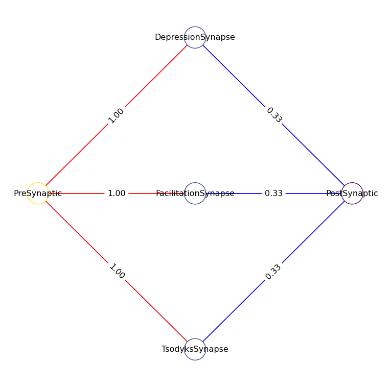
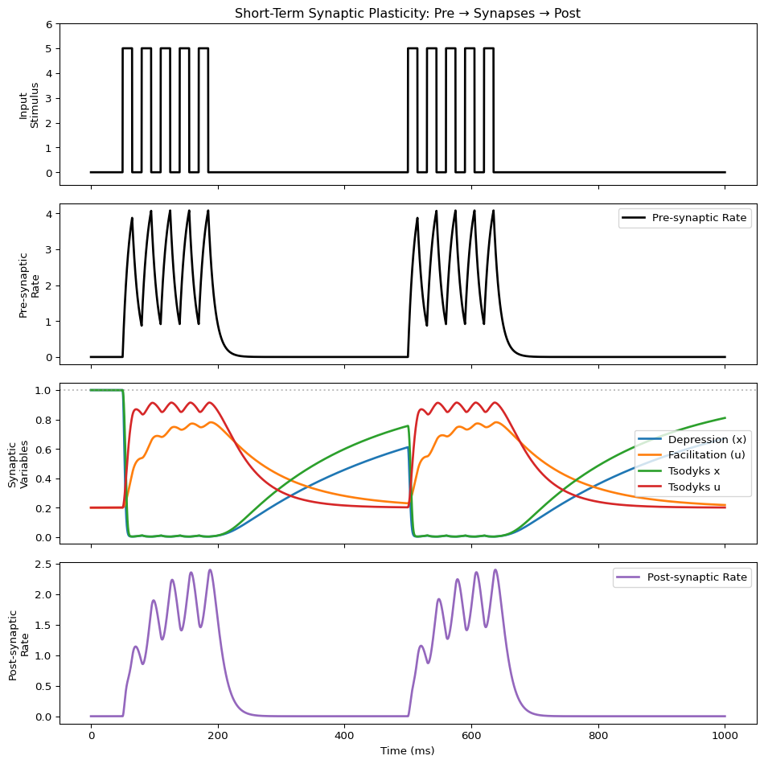

flowchart LR
Pre["Pre-synaptic<br/>Neuron"]
Dep["Depression<br/>Synapse"]
Fac["Facilitation<br/>Synapse"]
TM["Tsodyks-Markram<br/>Synapse"]
Post["Post-synaptic<br/>Neuron"]
Pre -->|"r_out"| Dep
Pre -->|"r_out"| Fac
Pre -->|"r_out"| TM
Dep -->|"r_eff"| Post
Fac -->|"r_eff"| Post
TM -->|"r_eff"| Post
Heterogeneous Edges
Edgedynamics as Relay-Nodes!
from tvbo import Dynamics
# Tsodyks-Markram sho#rt-term plasticity model
# Combines depression (x) and facilitation (u)
# r_eff is an output (algebraic equation) - PyRates renders this correctly
tsodyks = Dynamics.from_string("""
name: TsodyksMarkram
description: "Short-term synaptic plasticity with depression and facilitation"
parameters:
tau_x:
value: 200.0
description: "Recovery time constant for depression (ms)"
tau_u:
value: 50.0
description: "Recovery time constant for facilitation (ms)"
U0:
value: 0.2
description: "Baseline release probability"
k:
value: 0.5
description: "Depression rate"
k_fac:
value: 0.05
description: "Facilitation rate"
state_variables:
x:
equation:
rhs: "(1 - x)/tau_x - k*x*u*r_in"
initial_value: 1.0
description: "Available synaptic resources (depression variable)"
u:
equation:
rhs: "(U0 - u)/tau_u + k_fac*(1 - u)*r_in"
initial_value: 0.2
description: "Release probability (facilitation variable)"
coupling_terms:
r_in: {}
derived_variables:
r_eff:
equation:
rhs: "r_in*x*u"
description: "Effective synaptic transmission"
output:
- r_eff
""")
# Pure synaptic depression model
depression = Dynamics.from_string("""
name: Depression
description: "Short-term synaptic depression only"
parameters:
tau_x:
value: 300.0
description: "Recovery time constant (ms)"
k:
value: 0.3
description: "Depression rate"
state_variables:
x:
equation:
rhs: "(1 - x)/tau_x - k*x*r_in"
initial_value: 1.0
description: "Available synaptic resources"
coupling_terms:
r_in: {}
derived_variables:
r_eff:
equation:
rhs: "r_in*x"
description: "Effective transmission with depression"
output:
- r_eff
""")
# Pure synaptic facilitation model
facilitation = Dynamics.from_string("""
name: Facilitation
description: "Short-term synaptic facilitation only"
parameters:
tau_u:
value: 100.0
description: "Recovery time constant (ms)"
U0:
value: 0.2
description: "Baseline release probability"
k_fac:
value: 0.01
description: "Facilitation rate"
state_variables:
u:
equation:
rhs: "(U0 - u)/tau_u + k_fac*(1 - u)*r_in"
initial_value: 0.2
description: "Release probability"
coupling_terms:
r_in: {}
derived_variables:
r_eff:
equation:
rhs: "r_in*u"
description: "Effective transmission with facilitation"
output:
- r_eff
""")
# Simple rate neuron (I_ext=0.0, will receive external stimulus)
rate_neuron = Dynamics.from_string("""
name: RateNeuron
description: "Simple rate-based neuron with external input"
parameters:
tau:
value: 10.0
I_ext:
value: 0.0
state_variables:
r:
equation:
rhs: "(-r + I_ext + r_in)/tau"
initial_value: 0.0
coupling_terms:
r_in: {}
""")
print(f"Created plasticity models: {tsodyks.name}, {depression.name}, {facilitation.name}")Created plasticity models: TsodyksMarkram, Depression, Facilitationimport yaml
from tvbo import SimulationExperiment
from tvbo import Network
# Network: Pre-synaptic neuron → three parallel synaptic pathways → Post-synaptic neuron
# This allows direct comparison of how different plasticity affects the SAME post-synaptic target
network_yaml = """
label: SynapticPlasticityComparison
number_of_nodes: 5
nodes:
- id: 0
label: PreSynaptic
dynamics: RateNeuron
position:
x: 0.0
y: 0.5
z: 0
- id: 1
label: DepressionSynapse
dynamics: Depression
position:
x: 0.5
y: 0.8
z: 0
- id: 2
label: FacilitationSynapse
dynamics: Facilitation
position:
x: 0.5
y: 0.5
z: 0
- id: 3
label: TsodyksSynapse
dynamics: TsodyksMarkram
position:
x: 0.5
y: 0.2
z: 0
- id: 4
label: PostSynaptic
dynamics: RateNeuron
position:
x: 1.0
y: 0.5
z: 0
edges:
# Pre-synaptic drives all three synaptic relays
- source: 0
target: 1
parameters:
- weight:
value: 1.0
source_var: r_out
target_var: r_in
- source: 0
target: 2
parameters:
- weight:
value: 1.0
source_var: r_out
target_var: r_in
- source: 0
target: 3
parameters:
- weight:
value: 1.0
source_var: r_out
target_var: r_in
# All synapses converge onto the post-synaptic neuron
- source: 1
target: 4
parameters:
- weight:
value: 0.33
source_var: r_eff
target_var: r_in
- source: 2
target: 4
parameters:
- weight:
value: 0.33
source_var: r_eff
target_var: r_in
- source: 3
target: 4
parameters:
- weight:
value: 0.33
source_var: r_eff
target_var: r_in
"""
# Parse network and create experiment with all components
network_plasticity = Network.from_string(network_yaml)
network_plasticity.plot_graph(node_size=10, edge_cmap="bwr")
Run Simulation with Pulsed Stimulus
We create a pulsed input pattern that drives the pre-synaptic neuron. This matches Use Case 2 from the PyRates tutorial:
import numpy as np
# Create time array and pulsed input signal
duration = 1000.0
step_size = 0.1
time = np.arange(0, duration, step_size)
# Pulse train with longer recovery periods to show plasticity effects
# Two bursts of rapid pulses separated by a long gap
pulse_times = [50, 80, 110, 140, 170, # First burst (rapid)
500, 530, 560, 590, 620] # Second burst after recovery
input_signal = np.zeros_like(time)
for pt in pulse_times:
mask = (time >= pt) & (time < pt + 15)
input_signal[mask] = 5.0
# Create experiment
exp_plasticity = SimulationExperiment(
dynamics={
"RateNeuron": rate_neuron,
"Depression": depression,
"Facilitation": facilitation,
"TsodyksMarkram": tsodyks,
},
network=network_plasticity,
)
exp_plasticity.integration.duration = duration
exp_plasticity.integration.step_size = step_size
# Run with pulsed input to PreSynaptic neuron
pyrates_inputs = {"PreSynaptic/RateNeuron_op/I_ext": input_signal}
res = exp_plasticity.run('pyrates', inputs=pyrates_inputs)
print(res)Compilation Progress
--------------------
(1) Translating the circuit template into a networkx graph representation...
...finished.
(2) Preprocessing edge transmission operations...
...finished.
(3) Parsing the model equations into a compute graph...
...finished.
Model compilation was finished.
Simulation Progress
-------------------
(1) Generating the network run function...
(2) Processing output variables...
...finished.
(3) Running the simulation...
...finished after 0.49803408300022056s.
TimeSeries
├── time: f64[10000](numpy)
├── data: f32[10000,4,5,1](numpy)
├── labels_dimensions
│ ├── State Variable
│ │ ├── [0]: "r"
│ │ ├── [1]: "x"
│ │ ├── [2]: "u"
│ │ └── [3]: "r_eff"
│ └── Region
│ ├── [0]: "PreSynaptic"
│ ├── [1]: "DepressionSynapse"
│ ├── [2]: "FacilitationSynapse"
│ ├── [3]: "TsodyksSynapse"
│ └── [4]: "PostSynaptic"
├── title: "TimeSeries"
├── network: NoneType
├── sample_period: 0.1
├── dt: 0.1
├── sample_period_unit: "ms"
├── units
│ ├── time: "ms"
│ ├── state: NoneType
│ ├── region: NoneType
│ └── mode: NoneType
└── labels_ordering
├── [0]: "Time"
├── [1]: "State Variable"
├── [2]: "Space"
└── [3]: "Mode"Visualize Results
import matplotlib.pyplot as plt
fig, axes = plt.subplots(4, 1, figsize=(10, 10), sharex=True)
t = res.time
# Row 1: Pulsed input stimulus
ax = axes[0]
ax.plot(t, input_signal, 'k', lw=2)
ax.set_ylabel("Input\nStimulus")
ax.set_title("Short-Term Synaptic Plasticity: Pre → Synapses → Post")
ax.set_ylim(-0.5, 6)
# Row 2: Pre-synaptic activity (state variable: r)
ax = axes[1]
pre_r = res.get_region('PreSynaptic').get_state_variable('r')
ax.plot(t, pre_r.data[:, 0, 0, 0], 'k', lw=2, label="Pre-synaptic Rate")
ax.set_ylabel("Pre-synaptic\nRate")
ax.legend(loc='upper right')
# Row 3: Synaptic variables
ax = axes[2]
dep_x = res.get_region('DepressionSynapse').get_state_variable('x')
fac_u = res.get_region('FacilitationSynapse').get_state_variable('u')
tso_x = res.get_region('TsodyksSynapse').get_state_variable('x')
tso_u = res.get_region('TsodyksSynapse').get_state_variable('u')
ax.plot(t, dep_x.data[:, 0, 0, 0], 'C0', lw=2, label="Depression (x)")
ax.plot(t, fac_u.data[:, 0, 0, 0], 'C1', lw=2, label="Facilitation (u)")
ax.plot(t, tso_x.data[:, 0, 0, 0], 'C2', lw=2, label="Tsodyks x")
ax.plot(t, tso_u.data[:, 0, 0, 0], 'C3', lw=2, label="Tsodyks u")
ax.set_ylabel("Synaptic\nVariables")
ax.legend(loc='right')
ax.axhline(1.0, color='gray', ls=':', alpha=0.5)
# Row 4: Post-synaptic response (state variable: r)
ax = axes[3]
post_r = res.get_region('PostSynaptic').get_state_variable('r')
ax.plot(t, post_r.data[:, 0, 0, 0], 'C4', lw=2, label="Post-synaptic Rate")
ax.set_ylabel("Post-synaptic\nRate")
ax.set_xlabel("Time (ms)")
ax.legend(loc='upper right')
plt.tight_layout()
plt.show()